Introduction
The hippocampal–entorhinal network is the canonical substrate of spatial cognition, yet spatial signals have also been found in the primary olfactory (piriform) cortex (PCx). Classifiers applied to PCx activity recover the spatial context of a trial in odour–place association tasks. Can the animal’s moment-to-moment position be decoded from PCx?
We decoded position along a virtual corridor from PCx and hippocampal (CA3, DG) population activity of mice before (naive) and after (expert) learning an olfactory–spatial association task.
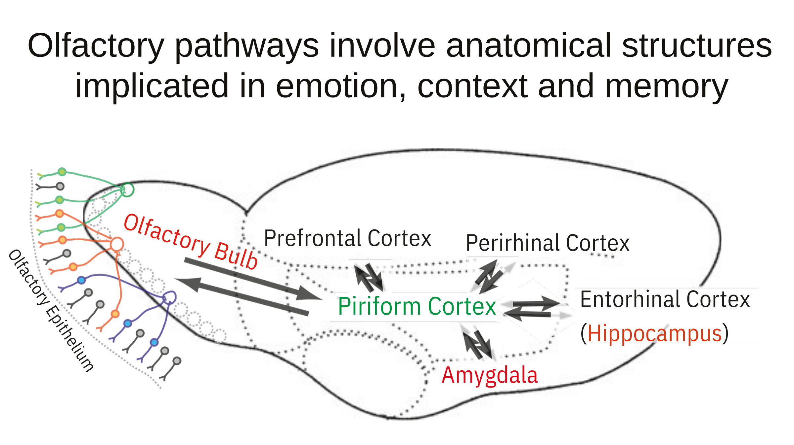
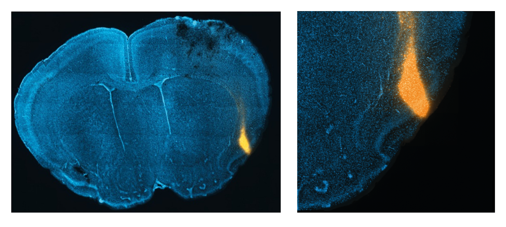
Federman N., Romano S.A., et al., Nature Communications, 2024
Olfactory discrimination in virtual reality
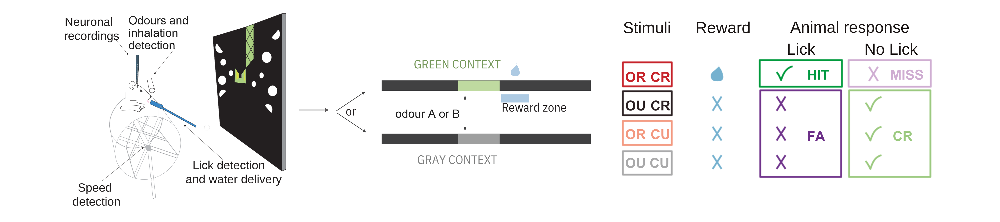
Spatial context is decodable from piriform cortex
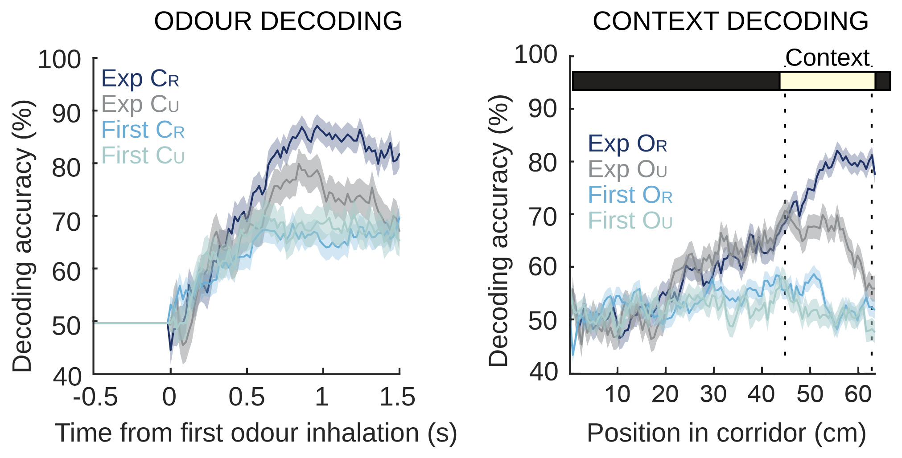
Odour-guided four-arm maze
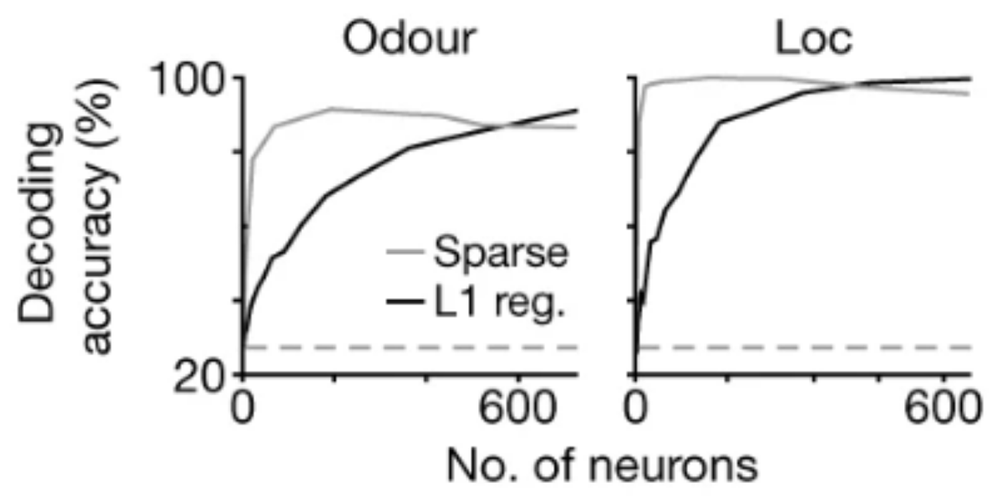
Federman N., Romano S.A., et al., Nature Communications, 2024
Poo C., Agarwal G., et al., Nature, 2021
Decoding position from neural activity
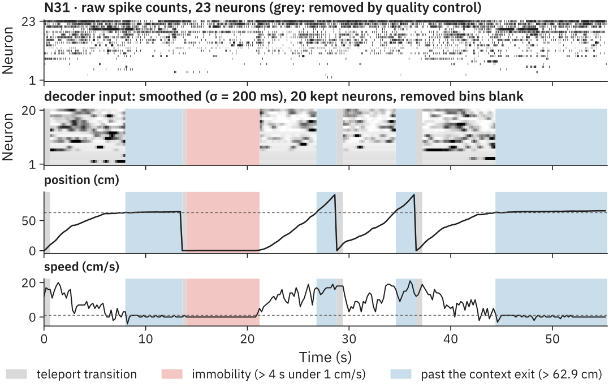
- Neurons removed: mean firing rate < 0.1 Hz, or unstable between session halves. Trials removed: low performance (d′), session-start artefacts.
- Input: spike counts in 200 ms bins, Gaussian-smoothed (σ = 200 ms); current bin only, plus the trial’s context.
Decoder: multilayer perceptron
Trial-wise 5-fold CV
Hyperparameters chosen per outer fold by Optuna (TPE, 20 trials) on the validation trials · Adam · MSE loss · early stopping. One model per target.
14 recordings from 12 mice
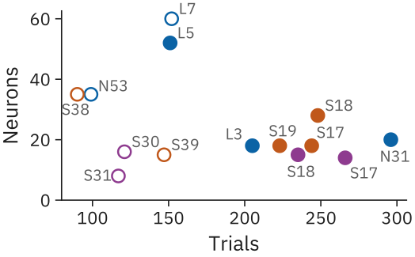
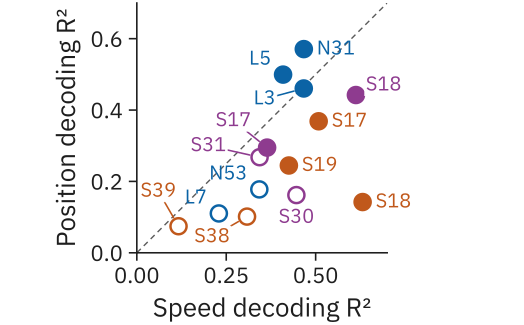
Right: position vs speed decoding (separate models, median test R²). Speed is decoded from every recording; in naive piriform cortex, position is not.
After learning: piriform cortex ≈ hippocampus
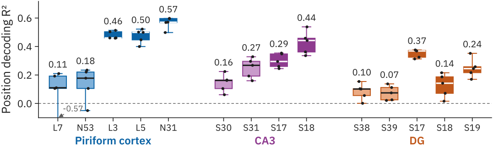
Test R² of each outer fold (dots); number = median of the 5 folds.
Decoded vs true position along the corridor
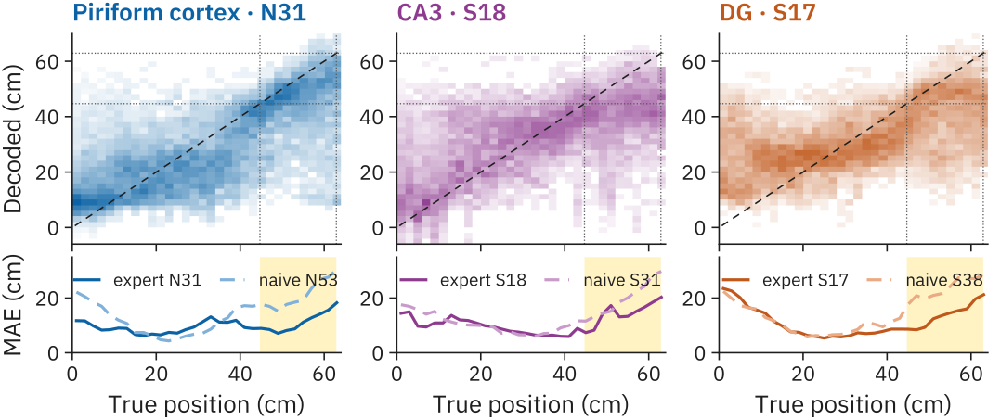
Top: decoded-position distribution per true position (columns normalised; best expert per region, 5 test folds). Bottom: mean absolute error, expert vs best naive. Squared-error decoders tend to err least near the mean training position (24–32 cm).
Predictions over real data
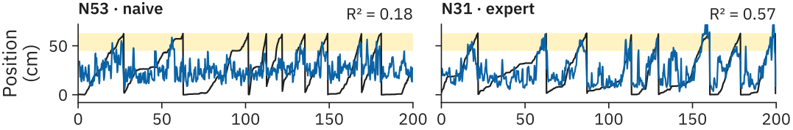
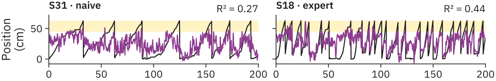
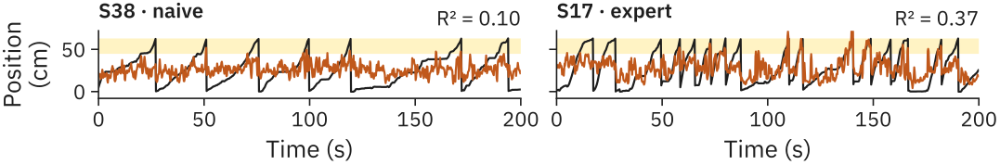
Conclusions
- After learning, position can be decoded from piriform cortex as accurately as from CA3 and DG (median R² 0.46–0.57 vs 0.14–0.44).
- Before learning, position is poorly decoded from piriform cortex (R² 0.11–0.18), while speed is decoded from the same neurons.
- In expert animals, the decoded position tracks the corridor and shifts sharply at the entry of the odour-context zone.
- Spatial information in the piriform cortex may emerge with learning of the odour–place association.